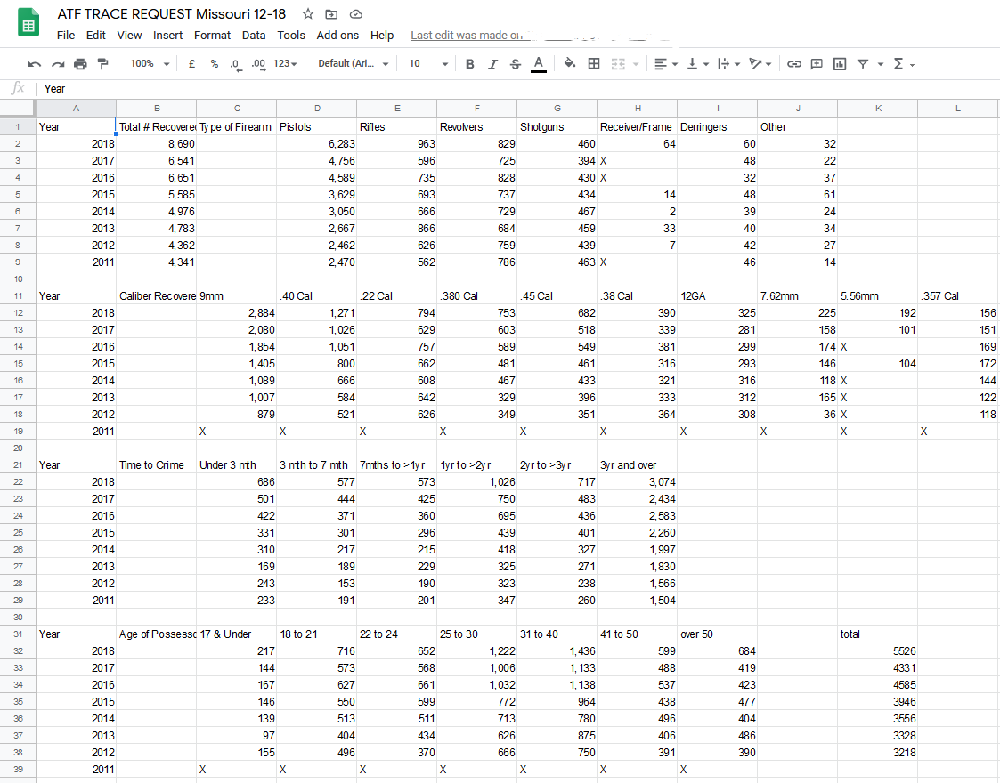

So the following can actually all be read in this story on the Columbia Missourian. This story was the culmination of several FOIAs that I filed with the ATF that looked into various statistics regarding gun crime and firearms in general in the state of Missouri. Specifically, this story examined what are called "Trace Requests." A trace request is sort of a background info on a specific firearm that is requested my local, federal or state law enforcement. For example, if the police arrest a suspsect at the scene of a homicide-- they will file a trace request with the ATF. They then learn things such as: where did the firearm originally enter circulation, who originally was said firearms owner and when it was purchased from a licensed dealer. Contrary to popular belief, unless you are going through a private sale (which is illegal in some states-- check the definitions page) you have to pass a background check to buy ANY FIREARM from a federally licensed seller. So if you want to say buy a handgun from a Missouri gun store you will have to fill out some paperwork and pass a background check. The process is quite quick though especially if you do not have a record.
Data collected between 2011 and 2018 by the U.S. Bureau of Alcohol, Tobacco, Firearms and Explosives (ATF) shows an increase in the number of minors possessing firearms in Missouri. The same data also shows that more guns are being acquired and used more quickly in crimes, including deadly shootings. In 2018, 8,690 firearms were recovered and traced by the ATF in Missouri. That number is up from the 4,341 traced in 2011. Columbia had 129 firearms traced by the agency in 2018. The annual report obtained from the ATF also shows several trends, including that more people under the age of 24 possess and use firearms in crimes.
There was a 40% increase between 2012 and 2018 in the number of guns traced to people 17 or younger. Last year, 217 guns were traced to people in that age group. In 2012, the number was 155. But it isn’t only minors. There’s been an increase in the number of guns traced to people ages 18 to 30, and that increase has been steady for the past seven years. This is merely a couple examples of the kinds of information you can get from ATF Trace requests.

Missouri has seen a steady uptick in the number of firearms that were traced in the under-three-years category. In 2011, the ATF traced 233 firearms that fell into the under-three-months bracket. Last year, the number of firearms used within three months of purchase rose to 686. That’s a 194.4% increase.
A study released in 2017 by the University of Chicago Crime Lab examined how sudden gun violence among adolescents can happen. Unlike gun violence that is carried out by older demographics, adolescent gun violence tends to be more impulsive.